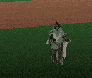

Shadow of the Nighthawks
| Betrayal at Krondor - Chapter 2 Shadow of the Nighthawks |
|
|||
| Gorath, James & Owyn must make their way to Romney. | ||||
|
[HOME]
| ||||
| A glance at the map will indicate the shortest way to Romney. There are, however, many other areas open for exploration. A trip towards Sethanon will uncover a complex quest. A journey to Silden could be rewarding. You might even benefit from a quick trip to Sarth, in order to visit Brother Marc again. And, finally, now is a good time to visit the Highcastle area in order to complete the Grain Quest, which you may have come across in Chapter 1. | ||||
| WALKTHROUGH Chapter 2 |
Here's a BASIC WALKTHROUGH for this Chapter (see below for details):
In order to enter Romney you need a GLAZER'S GUILD SEAL.
Don't go to Romney without it.
- Go to Darkmoor
- Go to Malac's Cross
- Talk to Abbot Graves
- Buy Lecture Ticket, and attend Lecture
- Go to Tavern
- Talk to Ivan Skaald
- Talk to Gran Petrumh
- Visit the Oracle of the Aal
- Go to Lyton
- Accept Lord Lyton's Quest (optional)
- Go towards Sethanon

- Find Max Feeber's Farm
- Get Glazer's Guild Seal from Max' Barn
- NIA'S QUEST (Optional)
- Talk to Nia in the Six Toe Tavern
- Visit Jared's Grave
- Talk to Hershel
- Go to Max Feeber's House

- Get Burial Cloth
- Talk to Max (in Field)
- Talk to Hershel again
- Go to Malac's Cross, talk to Ivan, Petrumh, and Ivan again
- Go to Darkmoor, talk to Lysle Rigger
- Go to Lyton, overhear talk about Glover

- Talk to Glover (in Lyton), buy Jared's Hand
- Revisit Jared's Grave, bury Jared's Hand
- Return to Nia's Tavern
- Go to Silden and the Temple of Eortis
- Kill the Rusalki (optional)
- Visit Haphra the Mystic
- Go to Romney
EXTRA QUEST (recommended):
- Teleport (or walk) to the Temple of Dala
- Go to Larissa's House, get Tuning Fork

- Exchange Tuning Fork for Leather Leggings
- Get Bag of Grain in exchange for Leather Leggings
- Bring Bag of Grain to the Temple of Dala.
Chapter 2 begins in Krondor Palace. James and Gorath are your characters, but you can "steal" Locklear's Inventory from a room in the palace. Do it!
MAP of Krondor Sewers (Upper Level) When you've done all you can in the Palace, enter the Sewers again. If you want you can explore the Sewers below Krondor all over again. If you killed all the Enemies here in Chapter 1, you will find 4 new Combats here [02, 06, 07, 09], composed of Rogues, Rogue Mages and a Quegian Pirate. Before fighting these Combats, find Owyn, who's waiting to join the party. Before you exit the Sewers, you will meet Limm again.
In Krondor City, go to the Tavern, and don't forget to Bard. Talk to Nivek in the Tavern - he will offer some garbled clues.
The Krondor TEMPLE (Chapel of Astalon) is not available as yet.
MAP OF KRONDOR SECTOR After exiting Krondor go to the crossroads. Your Quest will ultimately take you towards Darkmoor
in the East, but you will benefit by first going North to Sarth, in order to visit Brother Marc again. There are no Combats on the way, and Marc can sell you the SKYFIRE Scroll, and the FINAL REST Scroll. Even if Owyn already knows SKYFIRE, buy it and sell the Scroll at a profit. The FINAL REST Scroll is extremely rare. Brother Marc can also teach you a devious Chess Move, but he won't do so, unless you've been to Malac's Cross and talked to Ivan Skaald at the Tavern.
DARKMOOR Investigate Darkmoor. Note the BARN. Lysle Rigger is hiding inside, but he won't come out, until you've talked to Ivan and Gran Petrumh in the Malac's Cross Inn. Once you've talked to Lysle, you can return to Krondor, and Limm will give you the Glazer's Guild Seal required to enter Romney. Even if you do this, please don't barge on towards Romney - there's a lot more to this Chapter. Anyway, you don't need to return to Krondor - the Seal can easily be found later.
The Mercantile Shop in Darkmoor has a lot of BOOKS for sale, if you can afford them. There are two Moredhel Chests (MILK and RUST) North-East of Darkmoor, but you'll run into a TRAP before you reach them. This Trap is really easy: After Owyn pushes the Solid Crystal in front of the Blaster, Gorath can easily EXIT. Make sure you pick up the very valuable FADAMOR'S FORMULA from the RUST Chest. (If you intend to perform the Grain Quest later on in this Chapter, save at least one charge of this in order to open Larissa's Barn.)
Don't miss the TEMPLE OF RUTHIA East of Darkmoor.

East of the Temple of Ruthia you will run into FIVE Nighthawks [Combat 12]. After you've killed them you can pick up a GOBLIN STICKER, and more importantly, a TUNING FORK.
MAP OF MALAC'S CROSS AREA
MALAC'S CROSS
Don't miss the Barrel outside the Inn. It contains some Rope.

Go to the CHAPEL OF ISHAP and talk to Abbot Graves. He can sell you a TICKET for the lecture. If you go to the lecture, your ASSESSMENT SKILL will increase. TIP: Before going to the lecture, make sure that ONLY your Assessment Skill is selected. 
Go to the INN. Talk to Gran Petrumh and Ivan Skaald. Apart from all the information gained, Ivan will offer a CHESS CHALLENGE. In order to accept it you must be able to bet an EMERALD. You'll win the game if you've studied Chess with Navon in Chapter 1, but for now you'll probably have to go to Sarth and learn the Abbar's Turn from Brother Marc, if you want to beat Ivan. Check out Ivan's LOST & FOUND as well. It's worth the money.

The Malac's Cross Graveyard contains no items, but at least you can fight a Shade [Combat 39]. Look out for the CHEST Chest (and a Body) North of Malac's Cross.
TEMPLE OF LIMS-KRAGMA.
If you've visited the Temple of Dala in Chapter 1, here is a good place to TELEPORT there, in order to tackle the GRAIN QUEST. Please consult the GRAIN QUEST PAGE.A house to the South of the Temple will infect you with the Plague. You'll get a warning before you enter, so stay away! The Barn behind the House is not infected. If you insist, please get infected. Herbal Packs and Sleep will easily cure you.
MONEY-MAKING TIP: The plagued House contains some money. A weird feature here, probably not intended by the programmers, is that you can enter the house as many times as you want, and find the money each time, if you don't mind getting the plague! If you're patient enough you can amass a fortune here.
Visit the Oracle of the Aal - apart from the information, you will actually be talking to a Dragon guarding the Lifestone under Sethanon (see Chapter 9). [At later stages, the Oracle will have more to say.] Don't miss a Dragonstone cache near the statue. You will run into a Trap East of the Path towards the Oracle. It looks hard, but isn't. James shoves the Transparent Crystal in front of the central Blaster, and Owyn shoves the other Transparent Crystal in front of the Left Blaster. Gorath or James can easily EXIT the trap now. Don´t miss the NOTHING Chest here - you're practically standing on top of it when you exit the Trap. Right next to it there is a Trapped Chest and a Body. Near the road directly East of the Temple of Lims-Kragma, you will find the KNOCKER Chest. A few steps to the North you will encounter 4 Nighthawks [Combat 13].
Just south of Lyton you'll find Flarr's farm. He will charge 25 Sovereigns for a drink from his well. The drink will restore all your Health/Stamina Points, and interestingly the 25 Sovereigns won't get subtracted from your funds!
LYTON
Lyton is surrounded by Tax Collectors [Combats 18 and 19]. In order to pass them you will have to pay. There is only one way to get rid of the Tax Collectors: Visit Lord Lyton's House, and accept a ridiculous quest:
Bring him SIX suits of Standard Kingdom Armor (70% or better). The reward will be a VIRTUE KEY and a Letter from Brother Jeremy containing the answers to three Moredhel Chests in the area. Furthermore the Tax Collectors will disappear. (Is this worth all the trouble involved?). You can also choose to fight the Collectors (Quegian Pirates), but even if killed, they will return 34 hours later.
TIP: Since the Tax Collectors stay near the Main Road, they can be avoided by staying as far away from the Road as possible.
Head West, towards Sethanon. If you're following the Main Road, you will soon meet 3 Nighthawks
MAP OF SETHANON AREA West of Max Feeber's Farm you will find an unnamed village (Nia's village). The Six Toe Tavern is run by a woman named Nia Lycrow, who is also the Shopkeeper. If you've been here in Chapter 1, you may recall visiting Nia's Goods, but now the Shop is CLOSED. There's a story behind this, and a complex Quest for you to solve. But before we take a closer look at Nia's Quest, let's note some other options in this area.
 SETHANON is almost inaccessible for the time being. You will have to fight your way through an army of no less than 17 Shades in 5 separate Combats [07(1), 08(2), 09(4), 10(5), 11(5)]. If you can do this, the rewards will be substantial: the Sethanon Cache contains three Scrolls: DRAGON'S BREATH, DANNON'S DELUSIONS and GRIEF OF 1000 NIGHTS. If you fail, please note that you can re-attempt in Chapter 3. In Chapter 6 the Shades will be gone, and you can freely enter.
TIP: The above five Combats are placed very close to each other, and they are all Ambushes. This means that between Combats you can pump up your Stealth Skill by walking back and forth a couple of steps. Every time you successfully evade the Ambush, your Skill will rise.
Don't miss the BLOOD and WIND Chests to the South-West. The BLOOD Chest contains THOUGHTS LIKE CLOUDS. If you follow the Main Road West of Sethanon, you can hardly avoid 3 Nighthwaks [Combat 15]. Farther West you will come upon Covey's Farm. Covey will give Rations [2] to each Character. If you go on you will soon be faced with the possibility of exiting this Zone, either to Zone 2 (Eggley Sector) or Zone 7 (Dimwood South Sector). If you want to go to Eggley now, please consult the Chapter 1 Walkthrough. If you want to enter Dimwood at this stage, you should consult the MAP WEB, or this Chapter's SPECIAL PAGE.
Talk to Nia Lycrow at the Six Toe Tavern. Her father Jared has recently died, and her Shop is haunted by his ghost. You have now initiated NIA'S QUEST. Go North and visit the Graveyard. You can find some precious Naphtha in one of the graves, but you will also find that Jared's corpse has a hand missing. Your Quest is to locate Jared's Hand and return it to his Grave. NIA'S QUEST
More detail will be found in the MAP WEB.

Lysle Rigger is hiding in the Barn. He will tell you where to find Jared's Hand.
Go to Lyton. A conversation overheard at the WAYSIDE TAVERN will give you a clue to Glover's whereabouts. He is hiding out in a nearby house, and will sell Jared's Hand to you.
Once you have Jared's Hand, all you need to do is return to Nia's Village, visit the Graveyard and re-bury Jared's Hand. The Haunting of Nia's Goods will stop. Talk to Nia again - she will open her Shop (one of the cheapest in the game) and reward you with a GALON GRIEFMAKER.
MAP OF SILDEN AREA Now go East, past Lyton. A small wood East of Lyton holds three Moredhel Chests (SWORD, RIVER, ICE), guarded by a TRAP.The Trap is very easy - Gorath can walk through it unassisted.
Meet Abuk. For a fee of 80 Sovereigns he will improve your Lockpicking Skills.
TIP: Make sure that ONLY Lockpicking Skills are SELECTED before you meet Abuk. This will gain you a greater increase.As you approach the River you can either go North (towards Sloop and Romney) or South (towards Silden). Since Romney is your final destination in this Chapter, go to Silden first.
SILDEN
On the way to Silden you may spot three Moredhel Chests (ALCOHOL, THORN, DELEKHAN). The THORN Chest contains a Credit Note, seemingly promising riches beyond belief! Hold on to it, if you want, but it is not what it seems. Just before reaching Silden you'll bump into three Rogues [Combat 25], who will throow "disease infected mulch" at you and infect you with Plague [75%] (not as serious as it sounds). The Chest they are guarding contains a Spynote, with clues which are supposed to lead you to Max Feeber's Barn and the Glazer's Guild Seals. There's also a Locked Chest nearby.
The Silden Shop specializes in SPELLS. Chances are that you already own most of these Spells available - DRAGON'S BREATH and NACRE CICATRIX are the Spells you're least likely to have. If you don't have SKIN OF THE DRAGON, make sure you buy it!
If you spend the night in the Anchorhead Tavern you will probably get robbed.
Joftaz will talk to you, if you're infected withe the Plague, and tell you about the Temple of Eortis and the Mist Devil. He will be more eloquent if you talk to him in Chapter 3.
Don't miss a man at the Tavern who will give you Fadamor's Formula [6].
You can step aboard the Mist Devil and sail to the Isle of Eortis (for a fee of 30 Gold). Talk to Beyla, Priestess of the Temple. She will ask you to accept a Quest, which involves killing all the Rusalki infesting the banks of the River Rom. As you are about to leave the Temple, all your Characters will get cured of the Plauge, if they still have it. After this you will not be able to go back to the Temple of Eortis, until you've killed ALL the Rusalki. Then you will be able to return here at any time, and Beyla will cure you of any condition free of charge. This includes the recovery of any lost Health and Stamina.
|
Available in Chapters 1, 2, 3, and 6.
The Webmaster admits that this Quest had him really puzzled for a long time.
Thanks to Jay Lou, who solved it, here's a short guide:
The basic problem is to find ALL the Rusalki in the area. Some of them are easy to spot,
but others only come out at night. One group of night-walking Rusalki may even be next to
impossible to track down, especially if your Stealth rating is high and all your Characters
have Weedwalkers.
Since the Rusalki make night-time travel in the area hazardous, most Inns
around here have jacked up their prices. The prices will automatically revert to normal,
if you solve the Quest.
The relevant Sector Maps show the approximate locations of these Combats.
After exiting Silden, follow the below instructions if you want to find them all:
It should be noted that it is quite possible to ignore ALL the Rusalki, and finish the Game
without fighting any of them. The Temple of Eortis can NOT be teleported to, and you are not
likely to spend much of the game in this neighborhood. So is this Quest worth all the effort?
The Webmaster doesn't really think so, but then again this is probably true of many of the
game's side-quests. They're here solely for your enjoyment (and challenge).
|
THE ROAD TO ROMNEY TIP: On the way North towards Romney you will find a number of Caches. It is probably a good idea to stay away from most of them, until Chapter 3, when you can get sixfold prices for any saleable Items at the Romney Shop.MAP OF TWO INNS AREA Apart from Crenard and his Rogue pals (see above) and the Rusalki, there is only one Combat to be found in the TWO INNS Sector - a lone Rogue in a cornfield [Combat 20]. Unless you've killed all the Rusalki, the prices at the Two Inns will be extravagant, so stay away unless you want to Bard. You will find three Chests nearby (BARD, BRIARS and a Locked one).A bit farther North you'll come across a path leading to a House, two Wells and a Field. This is Arlie Steelsoul's House, and there's nothing for you here until Chapter 3. Go on, towards Sloop.
MAP OF SLOOP AREA You will soon reach the house of Haphra the Mystic. In this Chapter you will have to fight a lone Shade [Combat 22] before you can enter her house. Haphra will offer to predict your future for a fee of 50 Gold Sovereigns. You should REJECT her prediction, and realize that she is possessed by a Rusalka. Exit the house, and kill the Rusalka [Combat 04]. If you now re-enter Haphra's house, see will read your future reliably, and offer a valuable clue.Closer to the river bank nearby, you will run into two Rogues and a Quegian [Combat 21], who are guarding five Chests: two Locked, one Trapped, two Moredhel (HAIR, HOLES).
Soon you will reach the Town of Sloop.
You won't find much of interest here at this stage of the game, but note that the SHOP (Gallowlees' Jewels) specializes in Gems. Here you'll also find a defunct Temple. Visit the Brewery, which you may want to re-visit in Chapter 3.
MAP OF ROMNEY AREA You are now close to Romney. You can fight 3 Rogues and 2 Quegian Pirates [Combat 23]
near the river's edge. They are guarding two Mounds of Dirt. A path to the left leads to an illusory House. Don't miss the EGGS Chest behind the house! It contains the FETTERS OF RIME Scroll. This Scroll is quite scarce, and Owyn doesn't want to go through the rest of the Game without this Spell.
ROMNEY
Before entering Romney you may want to walk a bit to the North, and fight 4 Quegian Pirates [Combat 24] near the river bank. You can also keep going North and exit into Zone 4, but at this stage you're probably better off entering Romney. You will find Mitchel Waylander and his troops guarding the entrance, but if you have the Glazer's Guild Seal, he will let you in.
Once in Romney, make sure you check everything out BEFORE entering the the BLACK SHEEP TAVERN. If you MUST buy something in the Shop, do so now, but DON'T SELL anything! The prices will be sixfold in the next Chapter. Once you enter the Tavern, the Chapter will end.
 ,
AND
,
AND

will return in Chapter 3.
 [Combat 01]. You won't be able to open the Locked Chest
they're guarding, unless your Lockpicking Skill is 87 or greater. The Chest contains
a very nice stash of Gems. At the first Pit, you will meet the Kobolds, and accept
their Quest. They want a suit of Grey Tower Plate Armor. If you now talk to Naddur,
his clues should lead you towards Tyr-Sog. If your Scouting Skill is 45 or better, you
can find the Armor on the river bank West of the Bridge. Grey Tower Plate can also be
found in the Sarth dungeon. The reward is handsome: 5 points of Maximum Health and Stamina
for all the Characters.
[Combat 01]. You won't be able to open the Locked Chest
they're guarding, unless your Lockpicking Skill is 87 or greater. The Chest contains
a very nice stash of Gems. At the first Pit, you will meet the Kobolds, and accept
their Quest. They want a suit of Grey Tower Plate Armor. If you now talk to Naddur,
his clues should lead you towards Tyr-Sog. If your Scouting Skill is 45 or better, you
can find the Armor on the river bank West of the Bridge. Grey Tower Plate can also be
found in the Sarth dungeon. The reward is handsome: 5 points of Maximum Health and Stamina
for all the Characters.